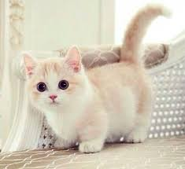

고양이 소개
목차
- 뱅갈
- 노르웨이 숲
- 먼치킨
- 랙돌
뱅갈
이국적인 외모를 가진 벵갈고양이는 야생 살쾡이(Asian Leopard Cat)와 집고양이(Domestic Cat)를 교배시켜 탄생한 품종이다. 야생 살쾡이의 공격적인 성향을 억제하기 위해 야생종과의 교배 후, 또 다른 집고양이와 교배해 3세대를 거친 4세대부터 벵갈고양이로 인정받을 수 있다. 벵갈고양이의 평균 체중은 수컷 4.5~6.8kg, 암컷 3.6~5.4kg이며 탄탄한 근육을 갖고 있는 대형묘에 속한다. 살쾡이나 표범을 떠올리게 하는 독특하고 매력적인 털 무늬로 사랑받고 있는 벵갈고양이는 매우 활동적이며, 사람에게 친근하고 애교가 많은 성격이다. 하지만 호기심이 많고, 왕성한 체력을 갖고 있기 때문에 충분한 놀이를 통해 운동량을 충족시켜줘야 한다.
노르웨이 숲
조상 중에 터키나 러시아산의 긴 털 고양이가 섞여 있다는 설이 있다. 수백 년의 세월을 거쳐 북유럽의 혹독한 날씨를 견딜 수 있는 방수성 장모로 진화한 것으로 보인다. 성장하는 데에 오래 걸리지만 완전히 어른이 되었을 때의 큼직한 체격은 야성미를 더욱 더해준다.
먼치킨
다리 짧은 품종이 많은 개와는 달리 고양이 품종 중 유일하게 다리가 짧다. 다른 짧은 다리 고양이들은 먼치킨 파생 품종들이다. 먼치킨의 역사는 매우 짧은데, 오래된 숏레그 고양이에 대한 기록은 1940년대부터 영국에서 발견된다. 하지만 신체적 결함 때문에 야생에서 생존율이 극히 떨어졌기 때문에 제2차 세계 대전 당시 개체수가 급감하여 거의 멸종 수준에 이르게 되었다고 한다. 이후 한동안 숏레그 고양이에 대한 기록은 유럽에서 나타나지 않았다. 현재 먼치킨 품종의 시조는 1983년에 루이지애나에서 태어난 숏레그 고양이 형제들이다. 1995년까지만 해도 먼치킨은 사실상 미국에만 존재하는 품종이었으며 당시 뉴욕타임즈 기사에 따르면 약 300마리에 불과할 정도의 희귀한 종이었다. 하지만 이후 고양이 농장에서 마구 생산해냈는지 대한민국에서도 제법 드물지 않게 볼 수 있는 고양이가 되었다. 유전적인 이유로 다리가 긴 먼치킨 롱레그(Non-standard munchkin cat)가 먼치킨 숏레그와 함께 태어날 수 밖에 없으나, 국제 고양이 협회(TICA)의 기준에는 숏레그만 인정하고 있다. 애초에 다리가 짧은 묘종을 말하는 거라 다리가 긴 먼치킨은 말이 맞지 않는다.
랙돌
1960년대, 미국 캘리포니아의 육종가인 앤 베이커(Ann Baker)가 조세핀이라는 긴 털을 가진 고양이의 새끼들을 이용하여 만들어 낸 품종이다. 베이커는 조세핀의 새끼 중 매우 얌전한 특징을 보이는 새끼들을 버만 또는 버미즈와 같은 외형을 가진 고양이와의 교배시켰다. 이렇게 만들어진 품종인 랙돌(ragdoll)은 ‘봉제인형’이라는 뜻이 있는데, 이는 랙돌을 안아 올리면 몸에 힘을 빼고 축 늘어져 사람에게 몸을 맡기기 때문에 붙은 이름이다. 그리고, 매우 느긋한 성격으로 평소에 매우 느릿느릿한 걸음걸이로 움직이며 안아 올리면 몸에 힘을 빼고 축 늘어진다. 사회적이며 사람을 좋아하여 장난감을 가지고 놀거나 아이들과 노는 것을 좋아한다. 공격성향이 매우 낮아 집고양이로 적당하다. 다루기 쉽고 순하다.